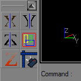

Custom Toolbox Buttons
The last group of buttons on the toolbox of the UnrealEd interface is for user-defined buttons. These are simply aliases to UnrealEd Console commands, so they're fairly limited in scope. These are defined in UnrealEd.ini?. |

|
Custom Toolbox Syntax
- [UserDefinedGroup]
- The name of the section located in UnrealEd.ini
- NumButtons
- the count of all the user-defined buttons
- ButtonX = Hint , Bitmap , Command
X - begins with 0, then 1,2,3 and so on
Hint - the text if mouse cursor over the button
Bitmap - the bitmap filename without extension (must be stored in System\EditorRes)
Command UnrealEd Engine Command (see UnrealEd 2 Console)
Example
This can be added if not exists or be changed in UnrealEd.ini. This example is only used in UnrealED by a default UT2003/UT2004 installation.
[UserDefinedGroup] NumButtons=6 Button0=Mirror X,MirrorX,Actor Mirror X=-1 Button1=Mirror Y,MirrorY,Actor Mirror Y=-1 Button2=Mirror Z,MirrorZ,Actor Mirror Z=-1 Button3=Select All Inside,SelectInside,Actor Select Inside Button4=Clip Z in WireFrame,ClipZ,Actor Clip Z Button5=Align view on Actor,CameraAlign,Camera Align
Utilities
Toolbar Creator is a handy application that sets up custom buttons for you.
Packs
A number of packs fo useful buttons are available on the web:
- Fordy's Pack: http://www.planetunreal.com/fordy/uedbuttons.htm